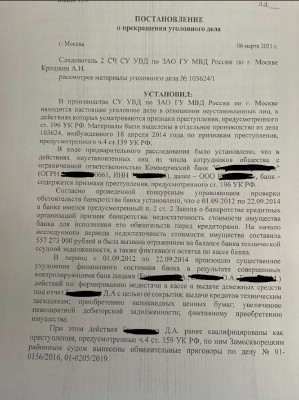
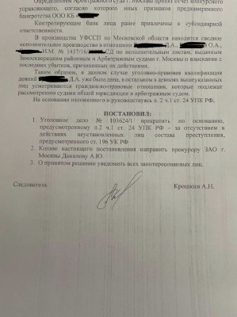

- Одним из основных направлений Адвокатов Коллегии г. Москвы "Шериев и партнеры" является защита по делам экономической направленности.
- Имея обширный практический опыт именно по указанным категориям, адвокаты Коллегии располагают специальными познаниями и навыками для качественной защиты по экономическим уголовным делам.
- Наши Адвокаты по экономическим преступлениям осуществляют защиту в Москве, Московской области и по другим регионам РФ. Возможен выезд наших специалистов в другие регионы, командировочные расходы обсуждаются в каждом конкретном случае.

Защита адвокатов по экономическим преступлениям
-
Обналичивание денежных средств
-
Проверка ОБЭП и др. органами (осмотр, обыск, выемка и др.)
-
Уклонение от уплаты налогов
-
Незаконная предпринимательская деятельности (без лицензии)
-
Совершение должностных преступлений
-
Незаконное получение кредита
-
Мошенничество и растрата в особо крупных размерах
-
Фиктивное (преднамеренное) банкротство
Консультация адвоката
по экономическим преступлениям
8 (925) 502-40-09
Адвокаты по экономическим преступлениям в Москве


Преимущества наших адвокатов по экономическим преступлениям
-
Уголовные адвокаты Коллегии осуществляют свою деятельность исключительно честно, добросовестно и в рамках правового поля
-
Наши адвокаты имеют практический опыт защиты по экономическим уголовным делам
-
Наши специалисты имеют опыт прекращения уголовных дел на стадии следствия
-
Возможна рассрочка платежей или поэтапная оплата услуг
Экономические преступления по которым адвокаты защищают:
(ч. 4 ст. 159 УК РФ) ⟶ Присвоение и растрата
(ст. 160 УК РФ) ⟶ Должностные преступления
(ст.286, 285 УК РФ) ⟶ Фиктивное банкротство
(ст.197 УК РФ) ⟶ Незаконное предпринимательство
(ст.171 УК РФ) ⟶ Незаконная банковская деятельность
(ст.172 УК РФ) ⟶ Отмывание денежных средств
(ст.174 УК РФ) ⟶ Налоговые преступления
(ст.199 УК РФ и др) ⟶
Защита уголовных адвокатов по другим делам. Подробнее ...
Стоимость услуг адвокатов по экономическим преступлениям
Главный постулат в нашей деятельности -
Честное и добросовестное отношение к делу !
Защита наших адвокатов по экономическим делам строится на профессиональном отношении к делу, честности и добросовестности выполнения своих обязанностей. Имея положительный и обширный практический опыт в защите по уголовным делам различных категорий преступлений, а так же большой опыт следственной работы по уголовным делам, наши специалисты смогут защитить Ваши интересы по уголовным делам экономической направленности.
Наша практика по экономическим уголовным делам
Вся практика по уголовным делам ...
Уголовное дело по преднамеренному банкротству прекращено.
В Коллегию обратился наш клиент, который уже прибегал к помощи уголовных адвокатов нашей Коллегии. Обратился вновь в связи с тем, что был привлечен к уголовной ответственности за преднамеренное банкротство. Уголовное дело находилось в производстве СК Росмии.
Результат по делу.
Спустя 2 года после возбуждения уголовного длеа, после неоднократных допросов подзащитного в статусе подозреваемого, представления стороной защиты дополнительных доказательств, уголовное дело было прекращено за отсутствием состава преступления в действиях подопечного.
Уголовное дело по мошенничеству в особо крупном размере (ч.4 ст.159 УК РФ).
Уголовное дело расследовалось СК РФ по г. Москве в течении 4-х лет, подзащитный обвинялся в хищении денежных средств в размере 320 мл.руб. К нему применялись различные меры принуждения от заключения под стражей до подписки о невыезде и заключении в медицинский стационар.
Результат по делу.
К моменту слушания уголовного дела обвиняемый был под подпиской, в результате судебного рассмотрения по дел был вынесен приговор о назначении обвиняемому 3,8 л. лишения свободы, ограничившись отбытым обвиняемым сроком. От дополнительных видов наказания в виде штрафа обвиняемый был освобожден. Гражданский иск оставлен без удовлетворения.
Уголовное дело по мошенничеству и превышению должностных полномочий (ст.159 УК РФ, ст.286 УК РФ).
Уголовное дело было возбуждено СУ СК России по 5 эпизодам. По окончанию следствия дело в суд было передано с одним эпизодом обвинения.
Результат по делу.
В результате грамотно построенной адвокатом защиты, вынесен приговор с назначением наказания не связанного с лишением свободы.
Уголовное дело по незаконной банковской деятельности и обналичиванию денежных средств (ст.172 УК РФ).
Уголовное дело рассматривалось Головинским районным судом г.Москвы. Привлекались сразу два лица. Срок наказания за данное преступление грозило до 7 лет лишения свободы.
Результат по делу.
В результате защиты построенной группой адвокатов нашей Коллегии, подзащитным были назначены наказания в виде 1 г. лишения свободы условно.
Уголовное дело по преднамеренному банкротству (ст.196 УКРФ) прекращено.
Уголовное дело расследовалось более 7 лет в УВД по ЗАО г. Москвы. Неоднократно продлевались сроки следствия.
Результат по делу.
В результате правильно и своевременно построенной защиты, адвокату Шериеву А.Н. удалось добиться прекращения уголовного дела на стадии следствия.



